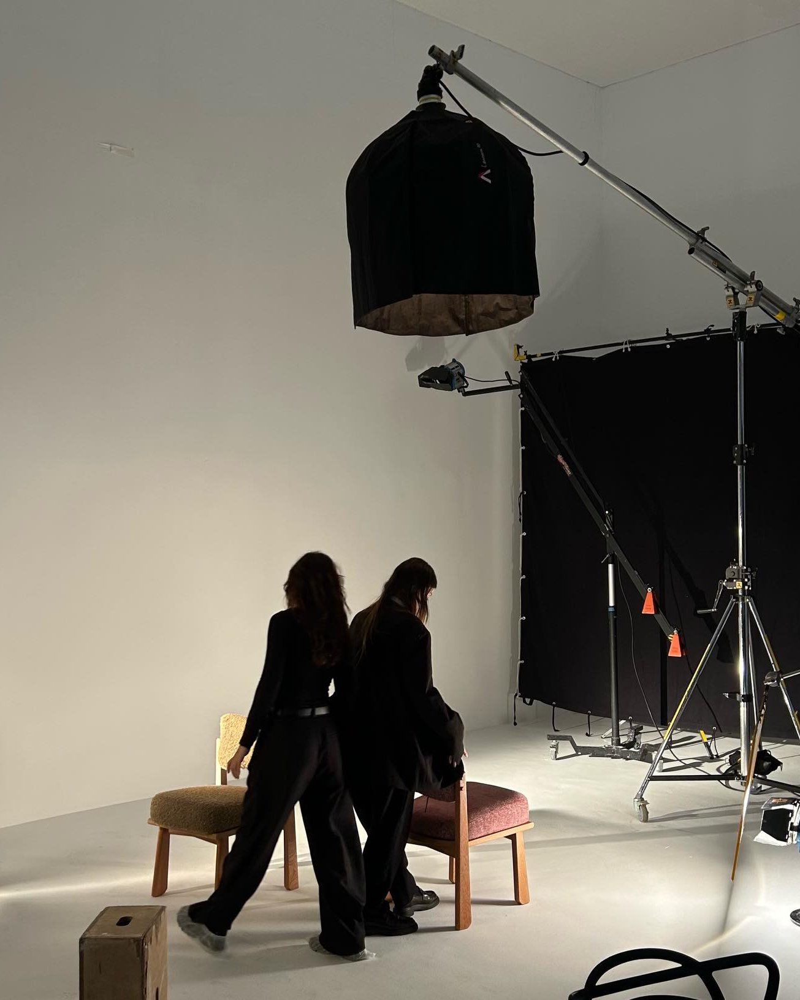
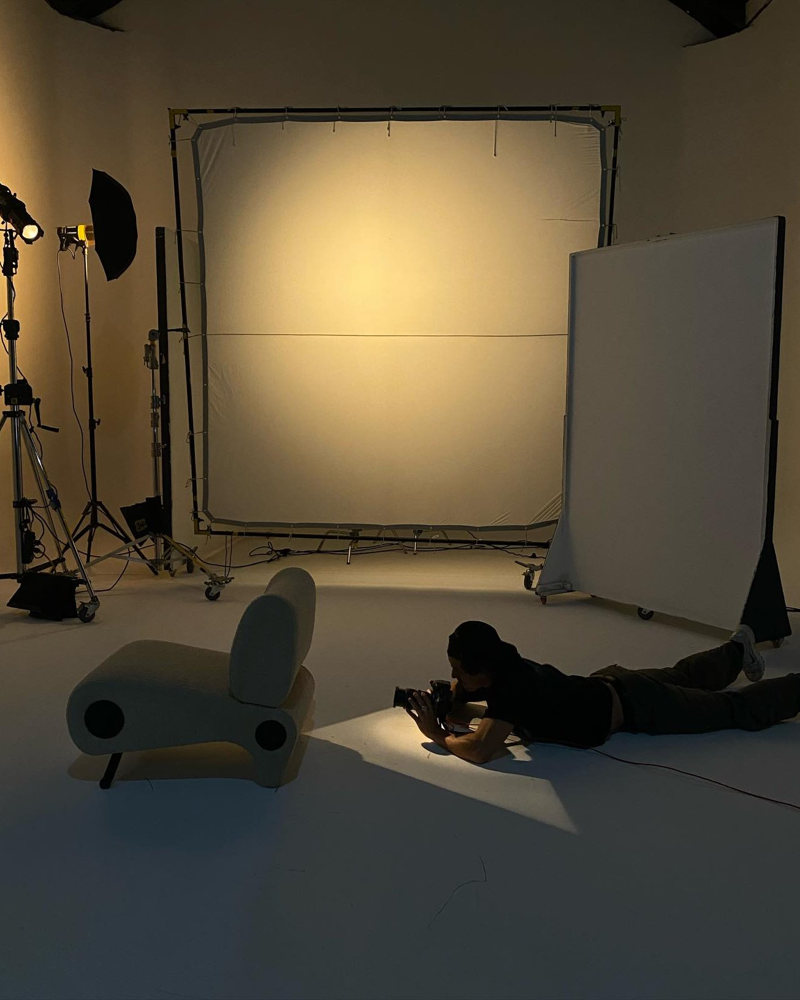
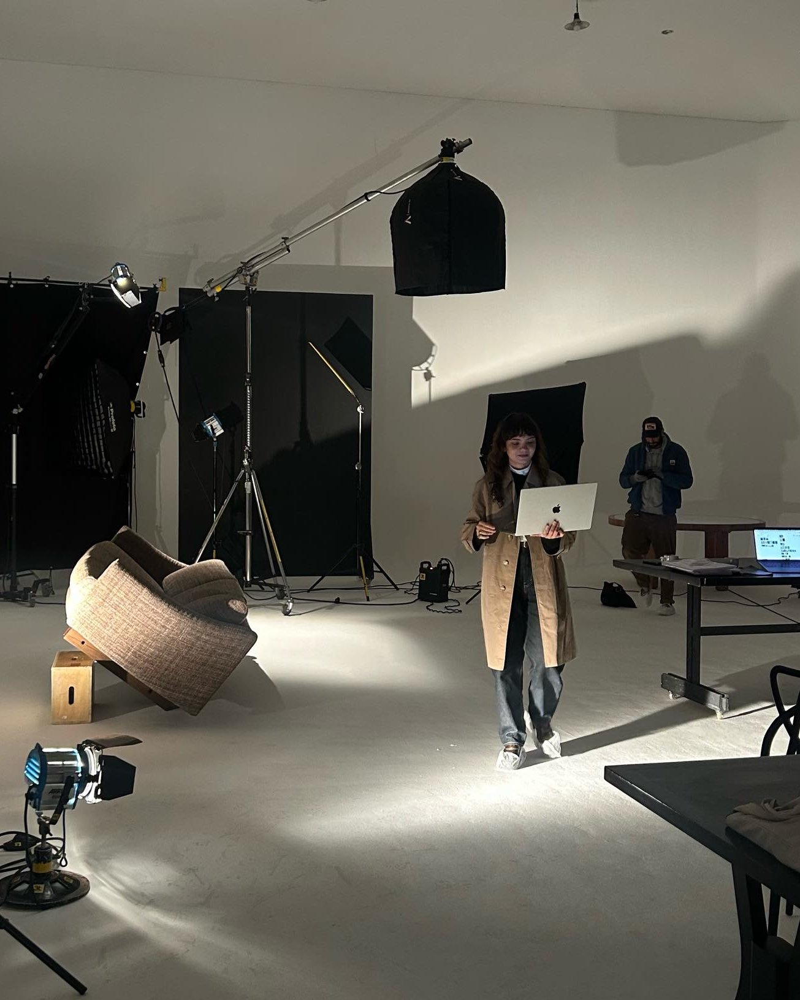
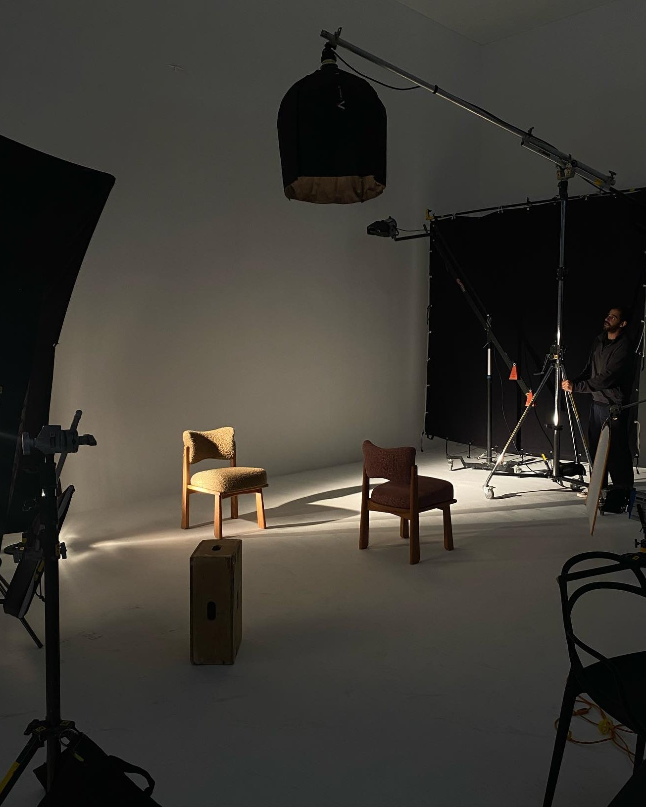
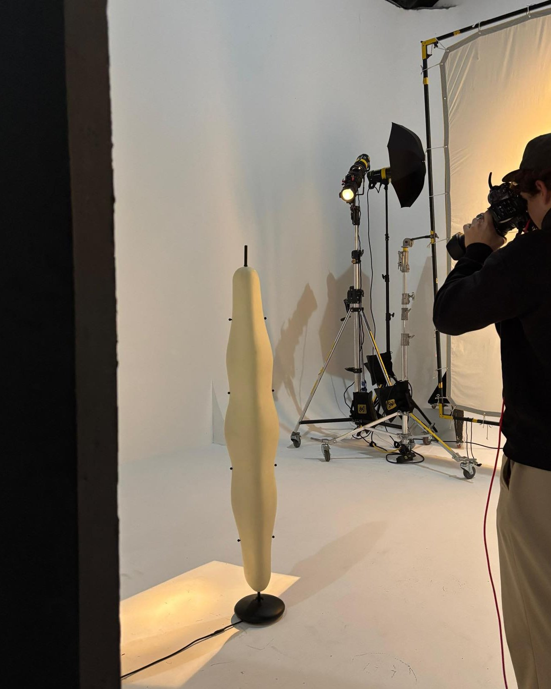

História · 19.05.2026
Como as fotos foram feitas
Uma campanha fotografada em estúdio, com direção de Manola Moura.
Fotografamos em 2025, no Estúdio Damas. Cada nome abaixo fez uma parte.
“Fotografamos as peças sob um olhar extremamente delicado, dirigido pela @manolamoura.”Instagram da More, 19.05.2026





Quem fez
- Direção criativaManola Moura
- Design gráficoAnnas Works
- Fotografia da campanhaBruna Sussekind
- Assistente de fotografiaErick Diniz
- Assistente de fotografiaFernando Bentes
- Fotografia stillD. Sulima
- Assistente de stillRenan Martins
- Tratamento de imagemNanda Carnevali
- CateringCozinharty
- EspaçoEstúdio Damas